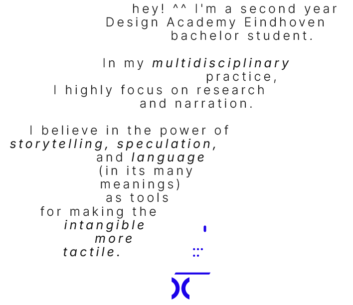

(ABOUT ME)
//Over
view(?)

Through design I look for ways to tell a story,
to connect and communicate. It brings hope of
understanding that I want to carry beyond myself.
Through design I look for ways
to tell a story, to connect
and communicate. It brings hope
of understanding that I want to
carry beyond myself.